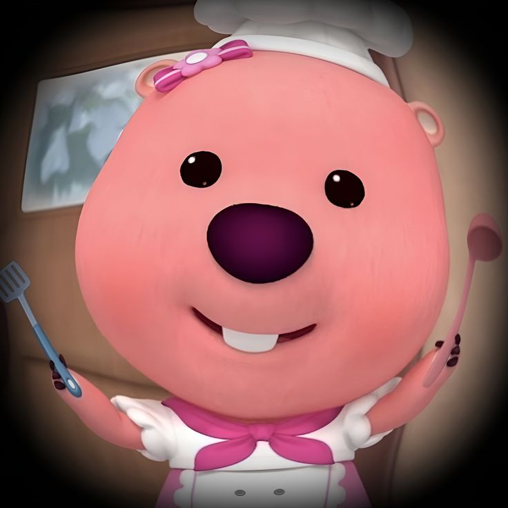
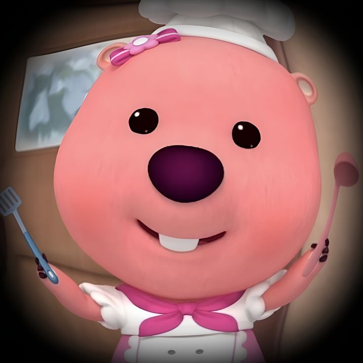
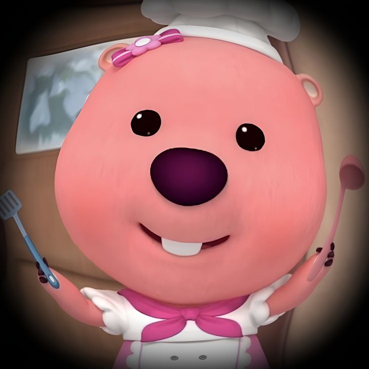

⇢ ˗ˏˋ Hello


 


| Year | 2010 | 2011 - 2016 | 2017 - 2021 | 2022 - Now |
|---|---|---|---|---|
| Place of study | Prasekolah SK Pasir Hor | SK Pasir Hor | SMK Padang Enggang | UiTM Machang Branch Kelantan |

My Education Information

Primary School
I went to a school in Pasir Hor from 2010 to 2016, where I also took my UPSR.
The school is close to my home and holds a lot of special memories for me because it was where my childhood really began.
The teachers there were so kind and easy to talk to, which made my time there even more meaningful.
Secondary School
I went to school in Padang Enggang from 2017 to 2021, where I took my PT3 and SPM exams.
The school is close to my home and has a mix of male and female students.
It was where my teenage years began, and I got to experience so many things, like joining games, clubs, and other activities.
The teachers there were amazing and taught me so much, leaving a lasting impact on me.
University Life
I started studying at UiTM Kelantan, Machang Campus, in 2022 and have been here ever since.
University life has been challenging, but it’s taught me a lot about patience and handling problems on my own.
I’ve become more independent, especially with managing my tasks and submitting assignments on time.
I’m lucky to have amazing friends who are always there to help me when I’m stuck, and my lecturers are so approachable and supportive whenever I need guidance.


This Website is developed for IMD318 Individual Assignment
Design by: Nurul Izyan Farziana binti Mohd Zamri
Group: D1CDIM1105F
Prepared for: Miss Nur Ainatul Mardiah binti Mat Nawi